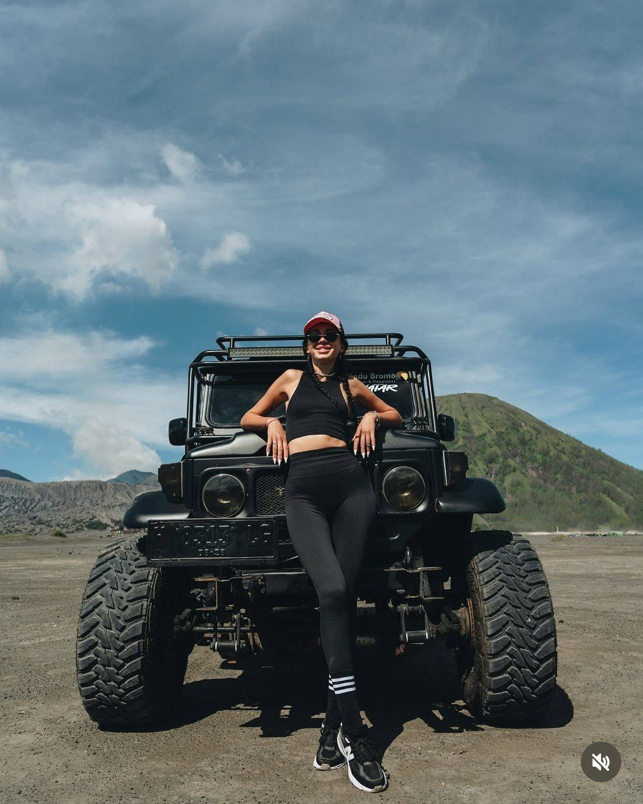
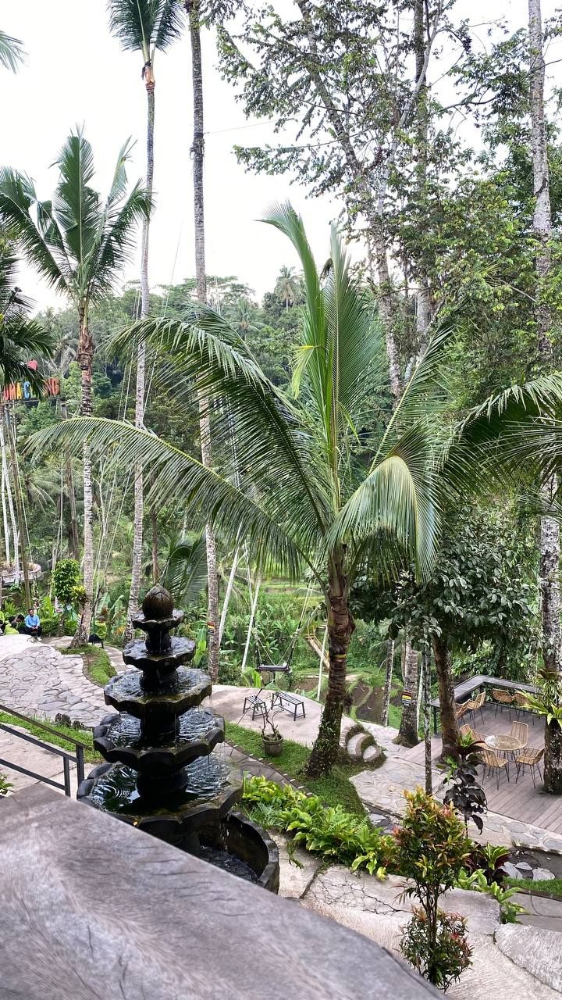
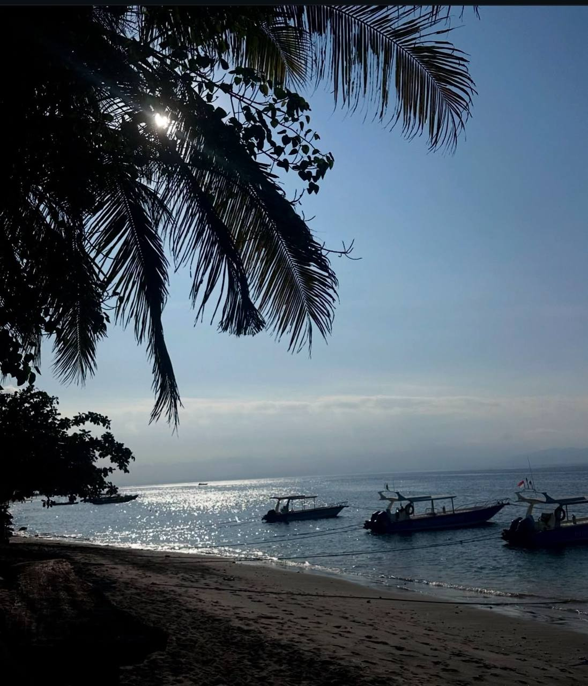
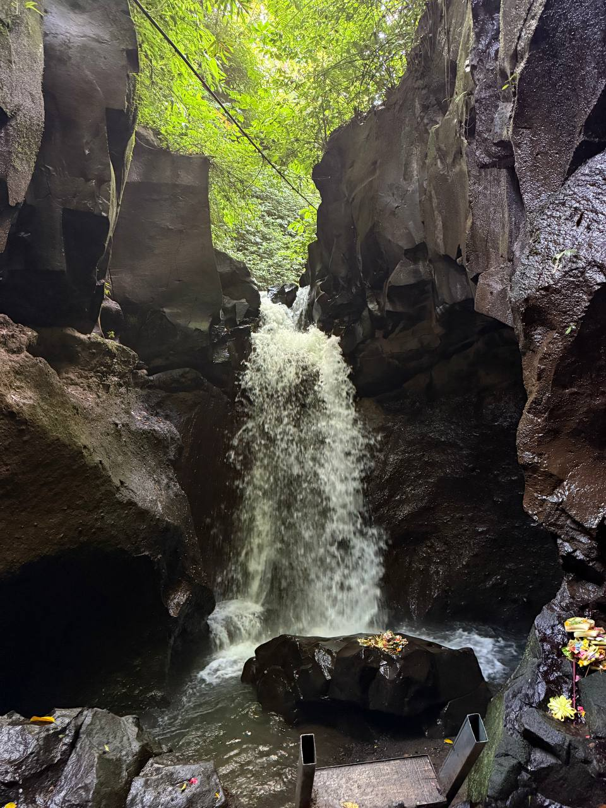
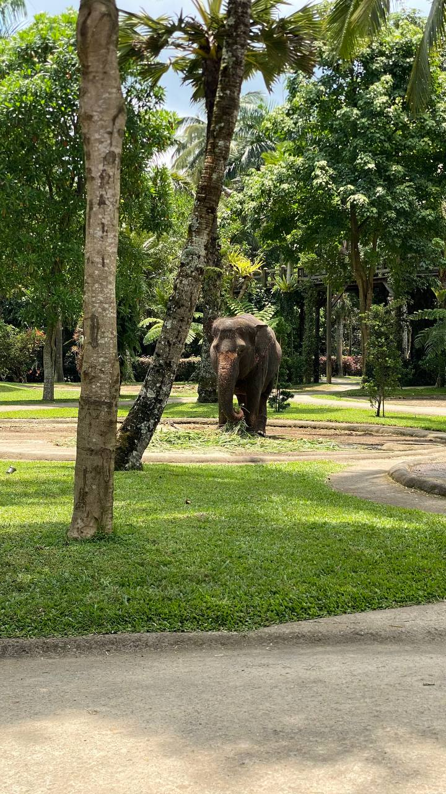
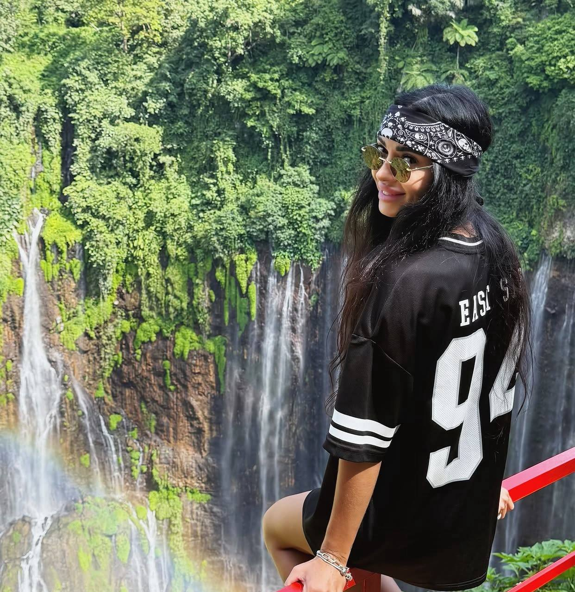
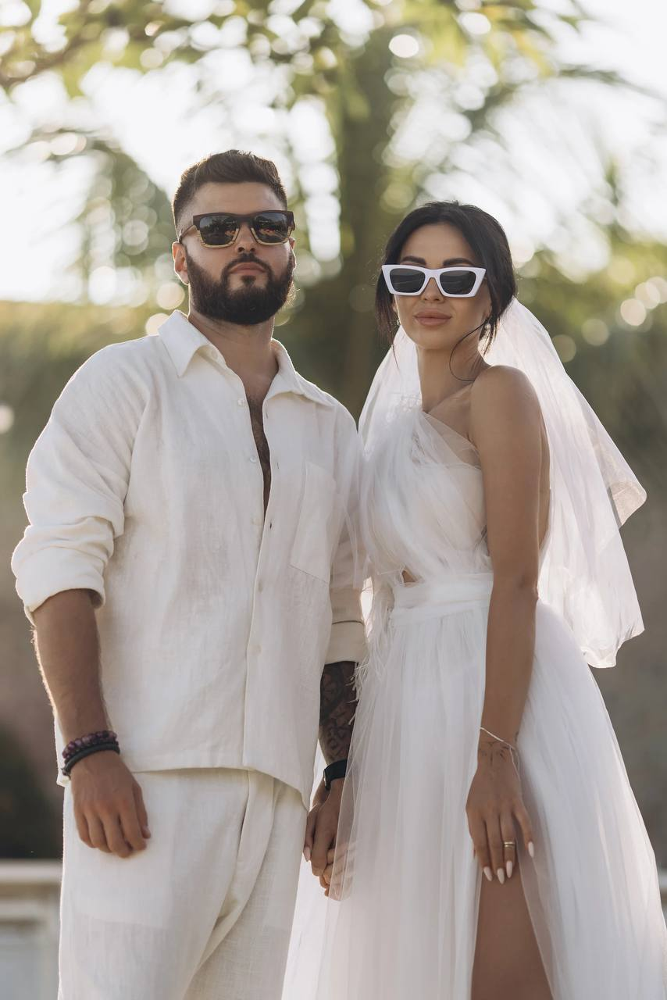
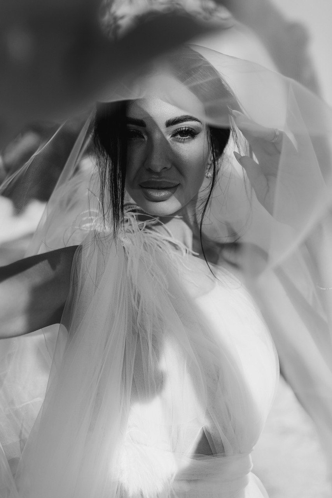
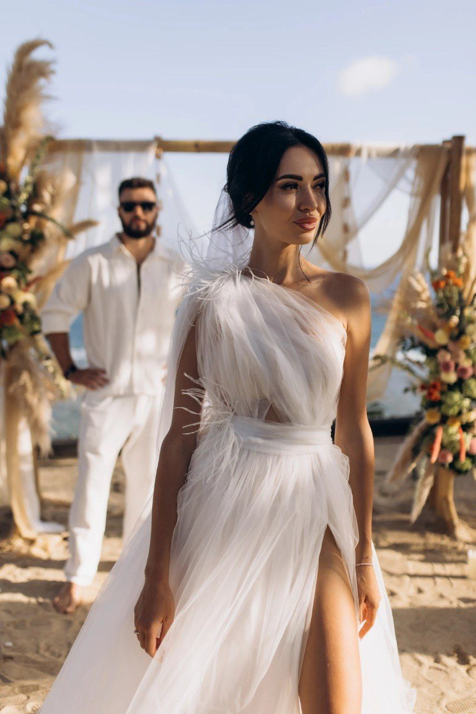

Одного чудового дня вона просто зібрала валізу й сміливо полетіла туди, де майже нікого не знала. Дикі джунглі, величні вулкани, безкраї рисові поля й бурхливий океан. Балі став для неї не просто черговим місцем на мапі, а справжньою точкою неповернення. Саме тут Віка остаточно знайшла себе й стала тією, ким є сьогодні.





Гучний пляж, сотні запалених свічок, повітряна пампасна трава й безкрайній океан на самому горизонті. Вона сміливо вийшла у приголомшливій сукні під вечірнє балійське небо — і все це відчувалося саме так, як і мало бути. Жодних банальних банкетних залів, жодних нудних умовностей і чужих правил. Усе зроблено винятково по-своєму, суто по-Вікіному.
У цей найважливіший момент поруч була Люба.



«На власному весіллі
вона мала вигляд на всі 100.»